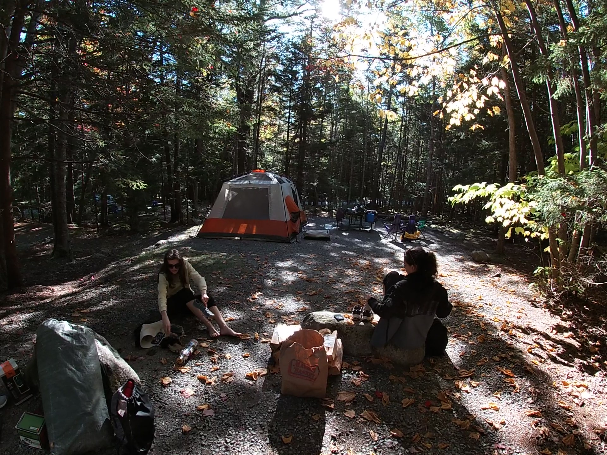
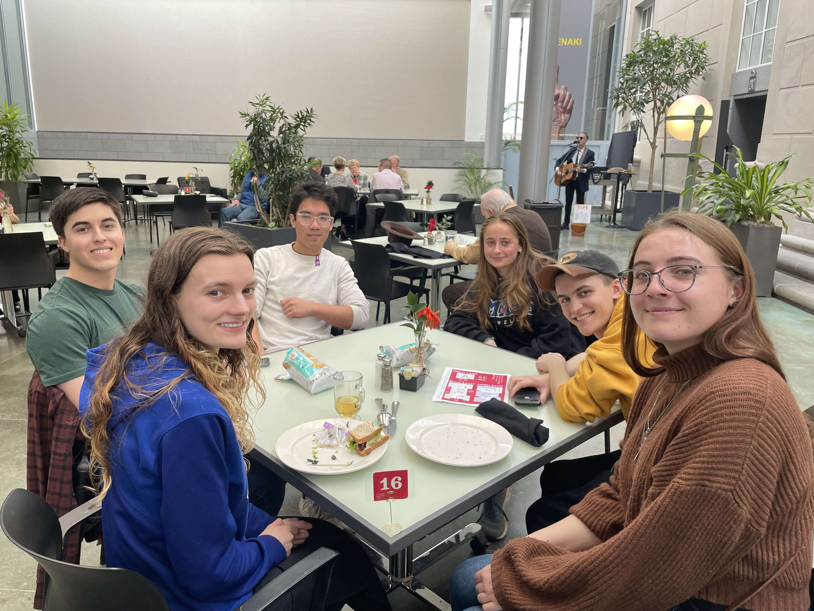
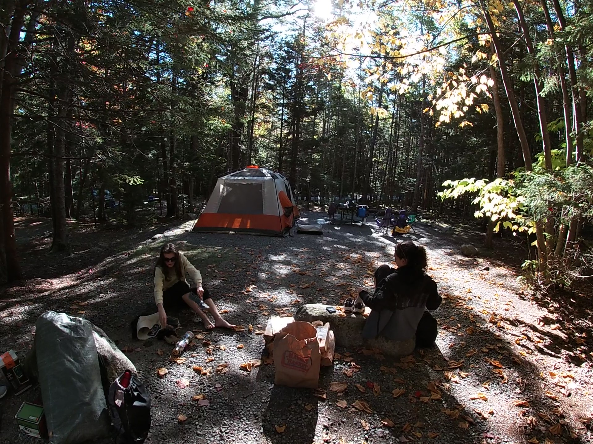
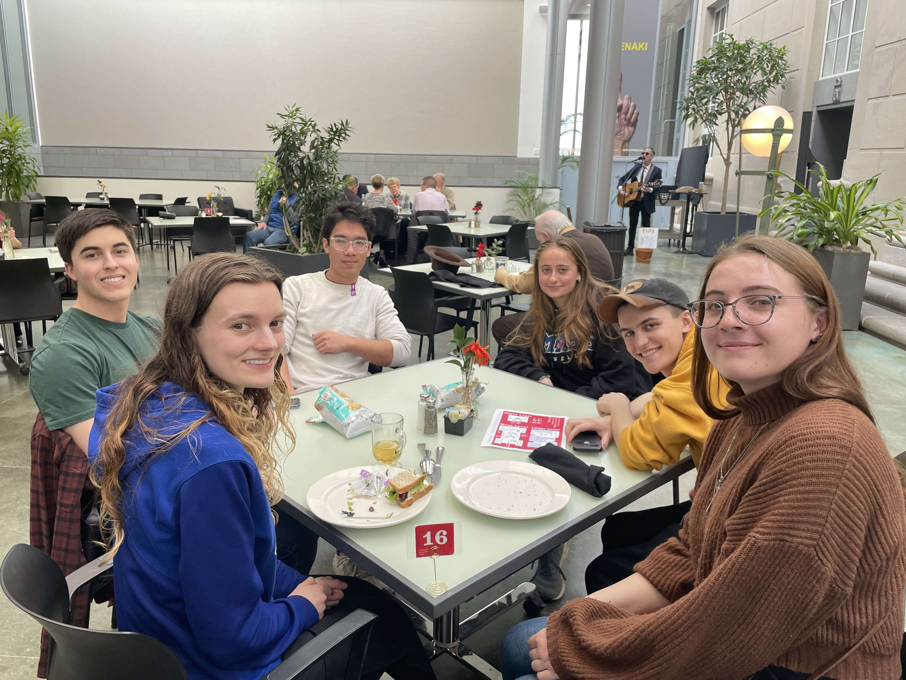

Travelling with friends!
I have been to at least 15 different states, 10 national parks and 5 other countries...but my favorite place by far is Acadia National park.
Piano
I am not a bucket list person but if I had to say one thing, it would be to play every free-standing piano I lay my eyes on. Currently I am teaching myself jazz/blues and can play some fun classics like Billy Joel, Elton John and Elvis...
Climbing
Here is a super fun recreation of the famous Burden of Dreams V17 climb. The Shawn Raboutou video got me into climbing originally, and I'm also a big fan of his sister Brooke, who competes and got silver in the 2024 Olympics.
My Favorite Playlists
I often listen to music and here are two of my favorite playlists. My tastes range all over the place, from funky jazz pop, to 90's rap and sometimes even movie soundtracks...